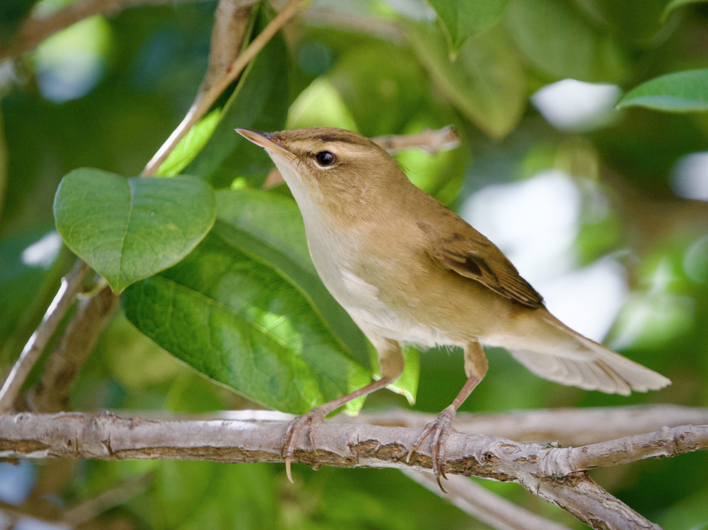
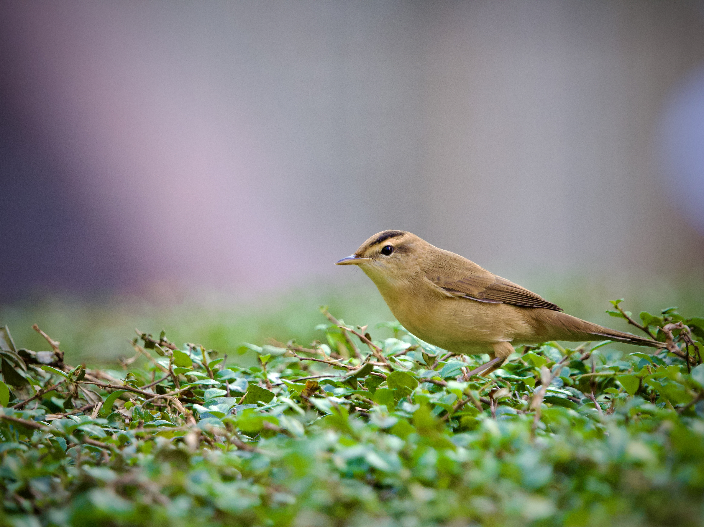

Black-browed Reed Warbler
Acrocephalus bistrigiceps
Order: Passeriformes
Family: Acrocephalidae

A cute brown reed warbler. Does not actually have a black brow, but a pale one with a black lining on top.

Generally lives in dense reeds, but for some reason is attracted to the urban skulky marsh bird magnet Telford Gardens where it forages on top of shrubs for a good while.